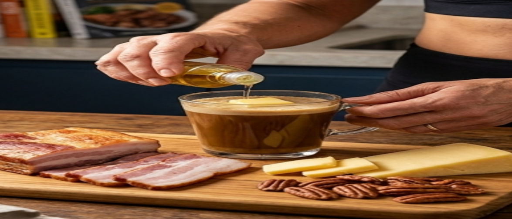
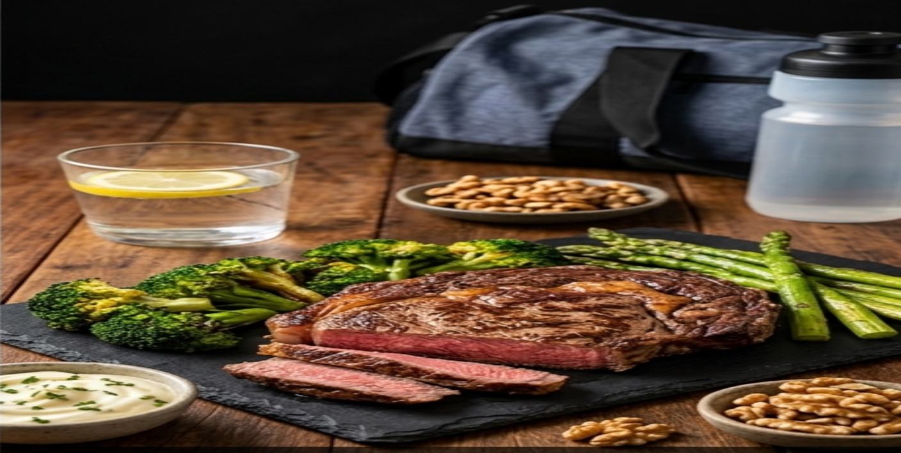

Alimentação Cetogênica e Ganho de Massa Magra: É Possível?
Durante muito tempo, vigorou o dogma de que para construir músculos era obrigatório consumir quantidades massivas de carboidratos, arroz e batata toda hora. No entanto, a estratégia da dieta cetogênica (Keto) vem demonstrando ser alternativa extremamente eficiente para quem busca hipertrofia limpa após os 40, ou seja, ganho de massa magra sem acúmulo de gordura visceral e sem pico de insulina.
Quando reduzimos drasticamente carboidratos para menos de 50g por dia, o corpo entra em estado de cetose, passando a utilizar corpos cetônicos derivados da gordura como principal fonte de energia. Para homem 40+, que já tem resistência insulínica maior, isso pode ser vantagem enorme: menos inflamação, energia constante e barriga seca enquanto ganha músculo.

1. Ajustando a Proteína sem Sair da Cetose (Erro que te tira da cetose)
Maior erro de quem tenta Keto focado em musculação é consumir proteína desordenada. Síntese proteica é fundamental para reparação muscular, mas excesso exagerado de proteína converte aminoácidos em glicose (gliconeogênese), tirando você da cetose e te deixando sem energia de gordura e sem energia de carb.
- Ajuste Ideal 40+: Mantenha proteína em 1,6g a 2,0g por quilo. Ex: 80kg = 128g a 160g por dia. Não 3g/kg.
- Fontes Recomendadas: Carnes bovinas magras, ovos inteiros (3-4/dia), peixes gordos salmão e sardinha, frango com pele, cortes suínos e queijos curados. Priorize gordura natural da carne.
- Divisão: 30-40g proteína por refeição em 4 refeições. Absorção melhor e mantém cetose estável.
2. Estratégia de Cetose Cíclica (CKD) para Treinos de Alta Intensidade
Treino de força intenso usa glicogênio muscular como combustível rápido. Na cetose tradicional 100% do tempo, você pode sentir queda de força nas 2 primeiras semanas. Para contornar isso, muitos praticantes 40+ usam Dieta Cetogênica Cíclica (CKD).
Estratégia consiste em manter 5 a 6 dias estritamente cetogênica (menos de 30g a 50g carb por dia) seguidos por 1 a 2 dias de reabastecimento estratégico de carboidratos de boa qualidade (batata-doce, arroz, frutas), preenchendo reservas de glicogênio sem comprometer sensibilidade à insulina. Isso é ótimo para treino de perna pesado.
| Estratégia | Como fazer | Para quem |
|---|---|---|
| Keto padrão | 30-50g carb todo dia | Quem treina leve/moderado e quer secar |
| CKD 5+2 (recomendada 40+) | 5 dias keto + 2 dias carb limpo | Quem treina força 4x/semana e sente fraqueza |
| TKD | 20g carb pré-treino | Quem precisa energia rápida só na hora do treino |
Para Velho Guerreiro, CKD 5 dias keto + fim de semana com 150g carb limpo funciona melhor. Segunda a sexta keto puro, sábado e domingo arroz + batata + fruta. Segunda volta em cetose rápido.

3. Eletrólitos: O Segredo do Desempenho na Academia (Onde todos falham)
Na cetogênica, níveis de insulina caem, rins excretam mais água e sais minerais. Perda de rendimento, dor de cabeça, cãibra e fraqueza nos treinos iniciais geralmente não é falta de açúcar, mas falta de eletrólitos. Isso é chamado gripe keto e dura 3-5 dias se não repor.
Para manter força e evitar cãibras nos exercícios multiarticulares, atente-se a:
- Sódio 3-5g/dia: Não tenha medo do sal marinho ou rosa nas refeições. Na keto você precisa mais sal, não menos.
- Potássio 3g/dia: Consuma abacate (1/dia tem 700mg), espinafre, vegetais folhosos escuros e sal light.
- Magnésio 400mg/dia: Suplementar magnésio dimalato ou bisglicinato à noite auxilia recuperação muscular e qualidade do sono, crucial 40+.
- Água 35ml/kg: 80kg = 2,8L + eletrólitos, não só água pura.
Conclusão: Keto Pode Sim Dar Massa Magra Após os 40
Construir massa muscular em dieta cetogênica exige paciência durante ceto-adaptação (2 a 4 semanas). Superada essa fase, você terá combustível constante de energia, menor inflamação articular, menos fome e capacidade de construir físico denso e definido sem barriga estufada de carb.
Para 40+, benefícios extras: melhora triglicerídeos, melhora sensibilidade insulínica e controle de apetite, o que ajuda a manter dieta por anos, não só 30 dias. Comece com CKD 5+2, proteína 1,8g/kg, eletrólitos em dia e treino de força 4x/semana. Acompanhamento de nutricionista potencializa ganho, cada biotipo responde diferente.
Força e disciplina.
— Velho Guerreiro